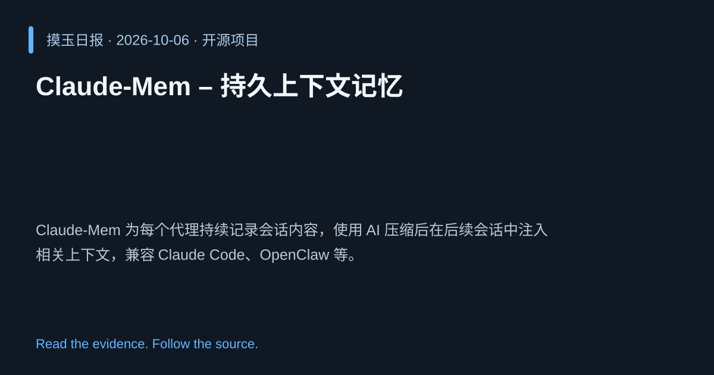

2026-10-06 · Asia/Shanghai · 开源项目 · #19
Claude‑Mem – 持久上下文记忆
thedotmack/claude-mem
Claude‑Mem 为每个代理持续记录会话内容，使用 AI 压缩后在后续会话中注入相关上下文，兼容 Claude Code、OpenClaw 等。
为什么值得关注
解决会话遗忘问题，提升长程任务连贯性，适用于复杂工作流。

热度 20.0 / 100；排名与评分保留该期记录。
2026-10-06 · Asia/Shanghai · 开源项目 · #19
thedotmack/claude-mem
Claude‑Mem 为每个代理持续记录会话内容，使用 AI 压缩后在后续会话中注入相关上下文，兼容 Claude Code、OpenClaw 等。
解决会话遗忘问题，提升长程任务连贯性，适用于复杂工作流。

热度 20.0 / 100；排名与评分保留该期记录。